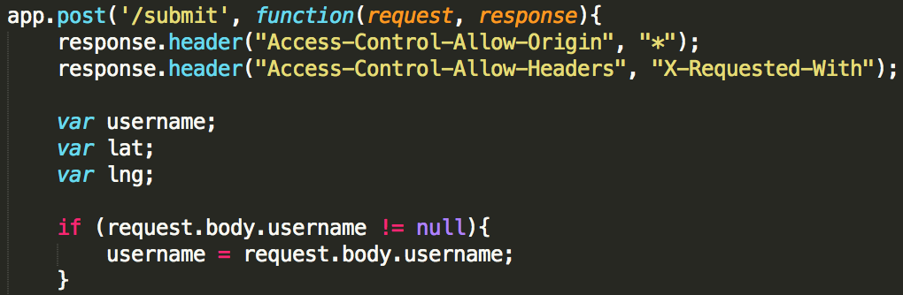
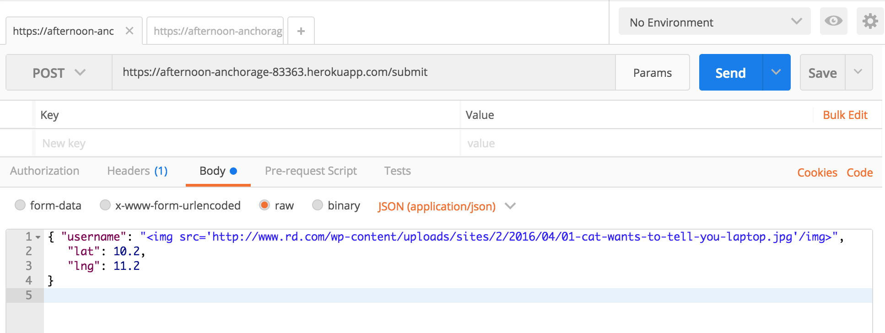
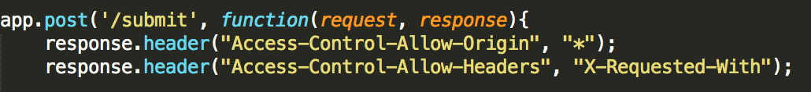
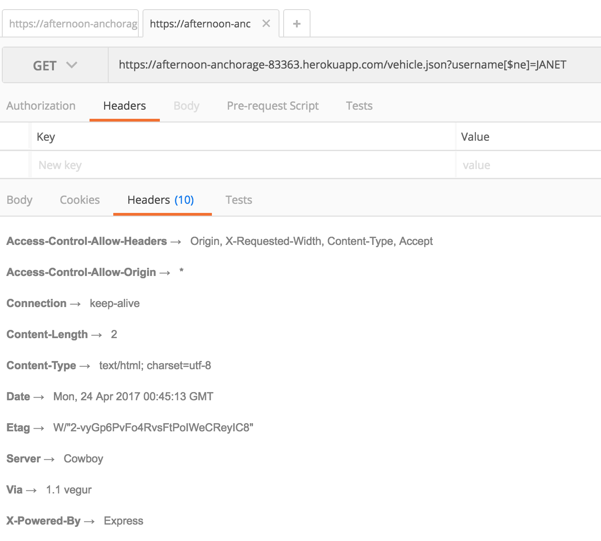
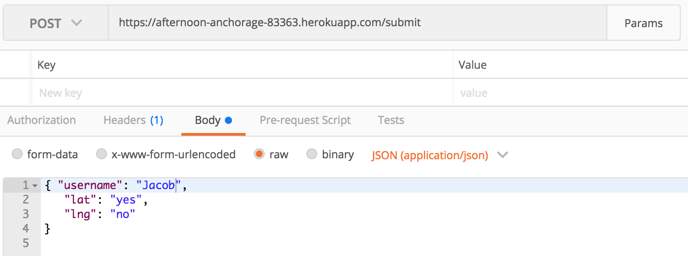
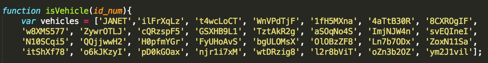

I tested and analyzed my parnter's code to find security and privacy issues in their work. The goal was to find at least 3 issues in their code and write a description of them, which appears below.
To test my partner's code I began by using Postman to make various requests with different types of values for the username, lat, and lng values to see if anything would break the code. I then checked the request header to see the level of access control. Finally, I looked through my partner's index.js code to see if anything stood out to me, and I noticed that there was no value sanitization so the code did not check the type of value for lat and lng, so I tested this vulnerability with Postman to see what would happen with non numerical values.
The first thing I found was that my partner's code allowed for any input as the username values, meaning the username given could be any kind of content. Since the username value should only be a username, you wouldn't want someone to be able to submit a cat picture or other, more malicious malicious content that could invade the page. The second thing I found was that my partner allowed for anyone to run the code on any site because they gave access control to all. This is not good because access is very powerful. If the code handles sensitive information such as bank accounts, giving someone the ability to run the code on another gives that person the ability to manipulate it so users can be tricked into giving access to this sensitive information to a malicious site which is running the original code elsewhere. Thirdly, I found that my partner did not verify that input for latitude and longitude were numerical. Although this is not a major security breach, when a non numerical number is entered the screen displays "NaN" which gives information about kind of data has been entered. Lastly, my partner hard put a list of all of the vehicles in the code. This means that anyone who gains access to the code then has access to all of the possible valid vehicles. This is a problem because the vehicles in the database are supposed to be secured information unavailable to an attacker.
This is located in the '/submit' post, within these lines there should be a check that the usrname is a username and not something else that could mess up the page or other, more malicious code.

The severity of Cross Side Scripting can vary from simply annoying to at a its worst, posing a major security threat. However, it is considering to be a significantly dangerous insecurity in code because it leave the possibility for a major security breach of malicious code injected in the page, which is very insecure.
The username is not being sanitized, so I was able to inject script and make changes to the actual page itself. It is possible to insert anything as the username, such as an image in the example below.

This issue can be fixed by adding a function to sanitize the username when given the user input. This willl remove any tags that are in the user input, which should not exist if the input given is a valid username.
This was found in the '/submit' post where the code gives response.header access control "*", which is demonstrated in the picture below.

This is a pretty severe issue because access control all gives permission to let anyone can run the code from any site, which can cause security breaches if the code handles sensitive information such as credit card numbers.
The problem with access control all is that anyone can run the code from any site, which poses a problem if the code is used to handle confidential information such bank account details or credit card numbers. The attacker could use the code on a malicious site to trick a user into supplying sensitive information, which the attacker can maipulate on this malicious site that is disguised as the original page because the owner allowed anyone to have access to this original code.

This problem can be solved by changing the access control to rescrit access from outside users. If the owner of the code changes the controls so as not let attackers use the code on other sites, then they can help to ptrotect the information their code hadles.
This was found on the '/submit' post page when giving strings as values for the lat and lng when making submitting a post.
This issue is not extremely severe and does not pose a major threat to the security of the information in the database.
The code does not check that the values for latitude or longitude are numbers when taking user input. Thus, if a non-numerical value is provided fot lat or lng the page displays "NaN" which tells an attacker they can provide a non-numerical value for lat and lng. This is a problem because it gives a user information about what is in the database.

This can be fixed by adding a check at the beginning of the '/submit' post to ensure that non-numerical values are not sent as parameters for the lat and lng, ensuring the user input is the correct type and that input information is not visible to an attacker.
This was found in the isVehicle function of my partner's code.
Although this is only a problem if someone has access to the source code, this is a significantly dangerous issue because anyone who does have access to the source code then also has access to the list of all vehicles.
My partner has the list of all the valid vehicles in the databaase in hard coded into the program. This is a problem because anyone with access to the source code in turn has access to all of the vehicles, which is information that is supposed to be secure.

This problem could be resolved by not hard coding the list of vehicles in the source code and instead adding all of the vehicles to the database beforehand.
My partner's code had a lot of vulerabilities in it. However, these vulnerabilites were extremely common and realively easily fixable. Since The assignment 3 data was not confidential or sensitive information, the code insecurities I found did not pose a huge threat to anyone's personal data. That being said, if the information handled by the code had been sensitive it would have been insecure and easily attacked. From this assignment and my partner's code I have learned how insecure most code is, and how important it is to preotect the information in your database. In the future I will consider the risk of insecure code and code accordingly. For my partner's code I would recommend making the changes I suggested to resolve issues 1-3, but for issue 4 I do not think it would be necessary to change how the vehicles are stored because it would be much more difficult to store the list a different way and the sensitivitiy of the data is not extremely imrportant.
Websites I used for reference on this material are listed below:
Reference 1 Reference 2 Reference 3